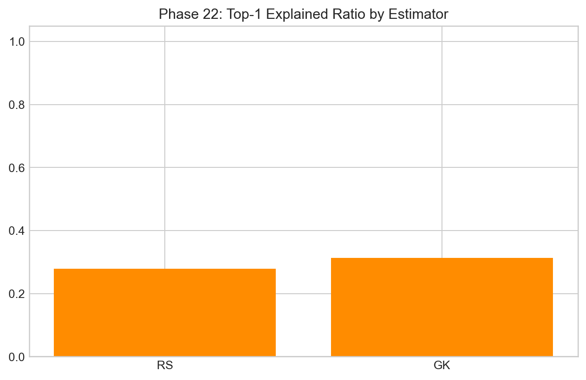
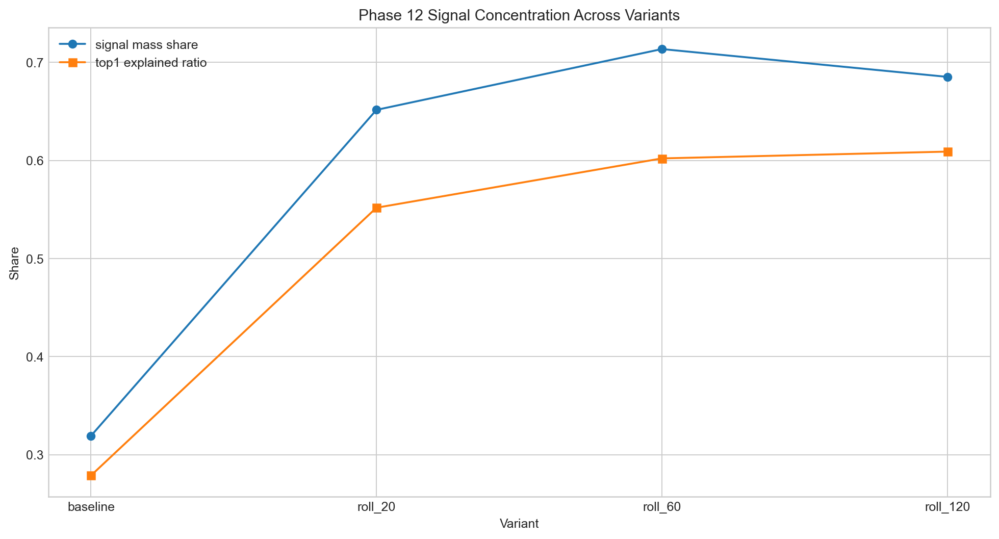

Pipeline and Preprocessing
Entry: this is where I made the data shape trustworthy before touching PCA.
I learned quickly that spectral analysis quality is mostly decided before eigen-decomposition. If the transformed panel is noisy in a preventable way, every downstream chart looks intelligent but means less than it seems. So I treated preprocessing like core research work, not setup boilerplate.
My practical sequence
I start from OHLC, construct realized volatility estimators, transform to log-vol, standardize by asset, then build panel variants (raw and smoothed windows). I compare estimator behavior in spectral space because if dimensionality depends entirely on estimator choice, the structure is weak.
From the estimator-sensitivity outputs I repeatedly saw that the core conclusions survive the RS vs GK swap. In one comparison set: K stays unchanged, regime counts stay unchanged, and only concentration metrics shift mildly upward under GK (around +0.012 top1 ratio and +0.015 signal mass share). That gave me confidence that the project isn’t just an estimator artifact.



On smoothing variants
I never treated smoothing as cosmetic. It changes geometry and can increase apparent signal concentration while also introducing PSD pathologies under pairwise estimation. That dual effect is why I always pair concentration plots with diagnostics instead of celebrating one metric in isolation.



What this phase taught me
If I want model honesty, I need two habits: keep every transformation auditable and treat each “improvement” as a possible distortion until diagnostics say otherwise. This phase set that culture for the rest of the project.
Shared reference
Dictionary: same terminology map used in every page.